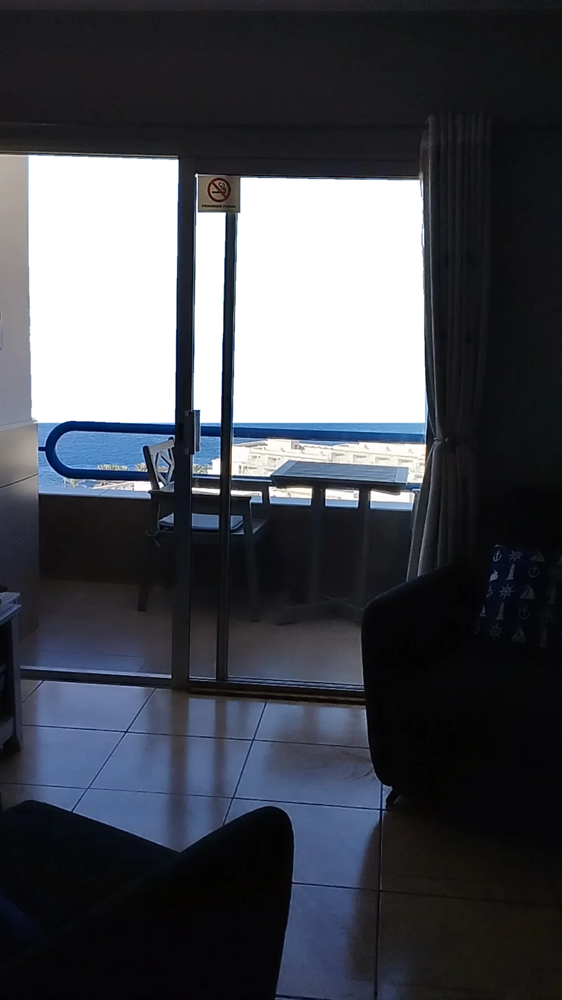
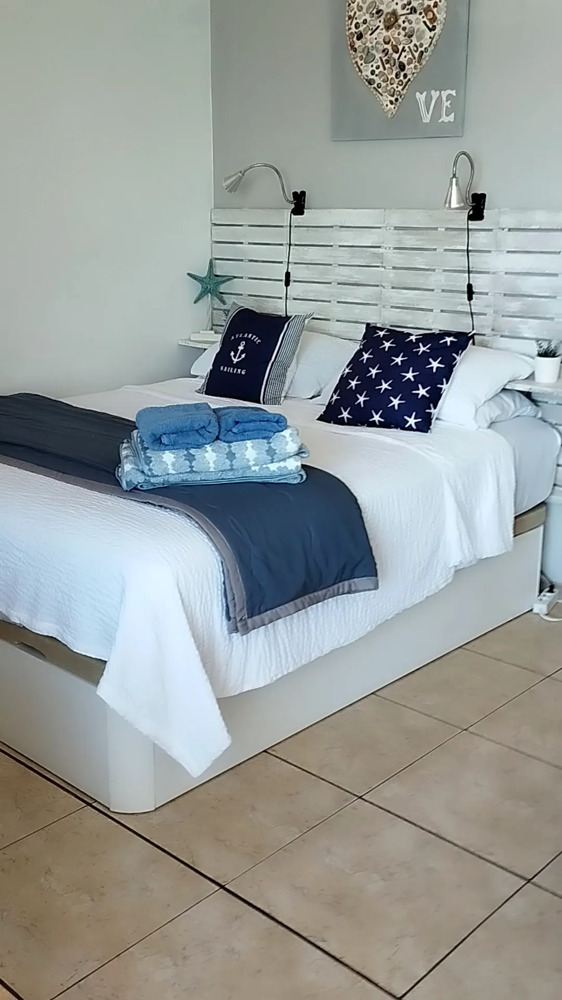
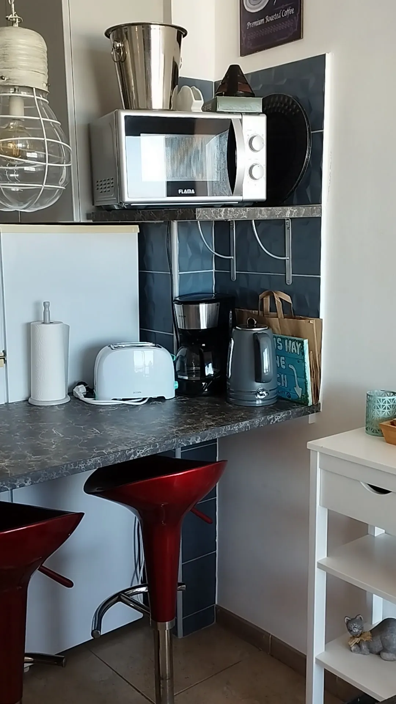
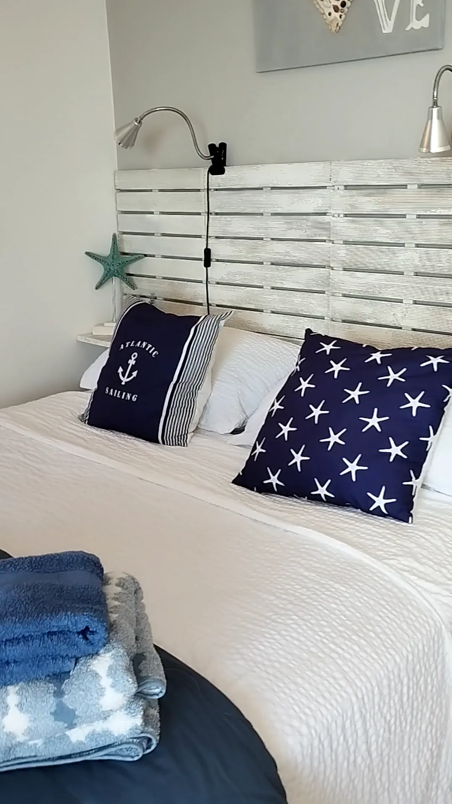
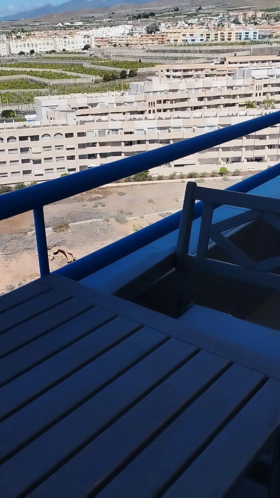
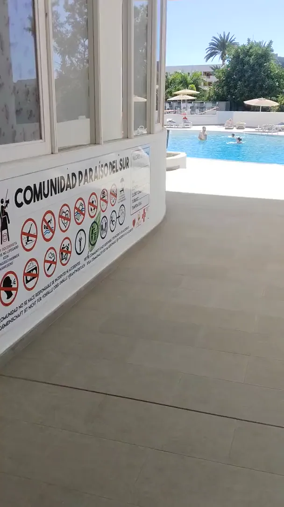

The Atlantic, from the 12th floor.
Ocean View Studio in Playa Paraíso, Tenerife. A studio for two with La Gomera on the horizon.
This is the view from the sofa.
What's outside the balcony
Stitched from a phone video filmed on the balcony. Left is south, right is the coast towards Los Cristianos and the hills.
The balcony faces west, so the evenings are the best part.
Small, bright, and set up for two.
One open room with the kitchen on one side, the bed on the other, and the glass doors to the balcony in between.
- Size35 m², 12th floor
- Sleeps2 adults (21+), double bed
- KitchenFridge, microwave, kettle, coffee maker, toaster
- CoolingPortable air-con, free to use
- OutsideBalcony with a table and two chairs
- Check-inKey box: arrive any time from 15:00. Check-out by 11:00
- AlsoWifi, TV





Twelve floors down, the pool.
The Paraíso del Sur pool, refurbished in 2026, with loungers and parasols round it. The building also has a massage centre with some spa facilities.
Ideas for a day out
- Teide National ParkThe volcano at the heart of the island, 3,715 m, the highest point in Spain. Go early.
- Los GigantesSea cliffs on the west coast, best seen from a boat.
- MascaA mountain hamlet at the head of a deep ravine in the Teno hills.
- La CaletaA small fishing village in Adeje, known for fish restaurants on the water.
- GarachicoAn old port town on the north coast with natural rock pools.
Our own guide is in the works: where we actually eat, swim and take friends. When it is ready, a QR code in the studio will open it.


Tonight in Playa Paraíso, the sun sets at .
Keep scrolling. You're setting it.
Every evening, from your balcony.
The sun goes into the sea a little further along the horizon each week, and behind La Gomera in spring and late summer.
Illustration on our daytime photo from the balcony. The sun's position and time are calculated for today.
Your balcony, any night you like.
Check prices and dates on Booking.com, or message us on WhatsApp to ask anything first.
- Adults only (21+)
- Up to 2 guests
- Self check-in from 15:00
- Non-smoking
- Prices on Booking.com